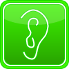

---
#Front matter
---
{% include head-menu.html %}
Learning Modes
Remember you will always learn best if you use a mixture of learning styles, but playing to your strengths may help with more difficult topics. To help find your personal preferences, you can use our online test.
The list below gives some advice on how you can adapt your learning. Ideas and examples are available in the Some Ideas section.
Visual Learners
have a preference for learning from graphs and diagrams representing information
Visual learners...
- like information presented in graphs, charts, diagrams etc.
- will be as comfortable reading and using symbols as the text they replace
If this appeals to you, you could...
- try using diagrams, graphs or charts to help understand new topics. Look for ways to alter the diagrams to show different examples, special cases, etc.
- use different colours to make your notes easier to read.
e.g. underline definitions in one colour, examples in a second colour and theorems in a third

Auditory Learners
have a preference for learning by listening and discussion
Auditory learners...
- like lecturers to speak about the topic in detail
- like learning through discussion with tutors and fellow students
If this appeals to you, you could...
- try discussing new topics with a group of fellow students, or take turns to explain the concepts to each other.
- talk through examples to better understand what's happening.
Reading/Writing Learners
have a preference for learning from information presented as text
Reading/Writing learners...
- like information presented as words - this may be blocks of text or lists of bullet points
- will read mathematical symbols and operators as if they are text
If this appeals to you, you could...
- make a short summary of a new concept and read it back. Using different words and phrases where possible will help you ensure you don't just copy parrot-fashion.
- when faced with a diagram, label it using words and write a brief description of what it shows.
Kinaesthetic Learners
have a preference for learning from practice and movement
Kinaesthetic learners...
- like learning by using practical examples
- like using interactivity and/or physical props as appropriate
If this appeals to you, you could...
- when starting a new topic, look for applications and examples, preferably in the real world, and try to understand how they fit with the theory
- when trying to learn a process, write each step on a separate card and practice putting them in order until it becomes easy
- keep a supply of modelling materials such as plasticine or drinking straws. You may find you are able to make a model instead of just visualising something.
{% include footer.html %}